RFID的标准体系
- 标准的作用：通过制定、发布和实施标准，解决编码、通信、空中接口和数据共享等问题
- 过早：限制技术发展；过晚：限制技术应用范围
[!note]
- 技术：接口和通信技术，如空中接口、防碰撞方法、中间件技术、通信协议
- 一致性：数据结构、编码格式及内存分配
- 电池辅助及与传感器的融合
- 应用：如不停车收费系统、身份识别、动物识别、物流、追踪、门禁等
RFID标准分类
- 国际标准（ISO/IEC)、 国家标准、 行业标准
- 技术标准、应用标准、数据内容标准、性能标准
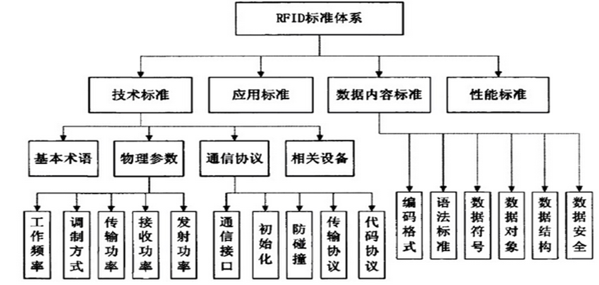
RFID技术标准基本结构
RFID技术标准主要定义了不同频段的空中接口及相关编码标准和通信协议（通信接口）是争夺比较激烈的部分，两者也构成了RFID标准的核心。
数据内容标准
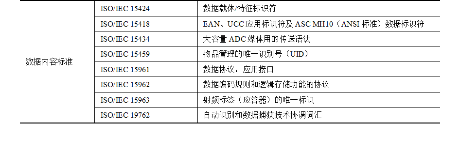
性能标准
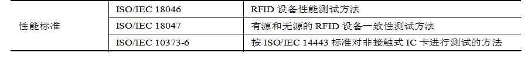
RFID标准
[!important]
RFID标准争夺的核心主要集中在RFID标签的内容和编码标准
ISO/IEC标准体系
- 非接触IC卡：由于距离不同分为密耦合（紧靠没有应用），近耦合（<10cm），疏耦合（约50cm)
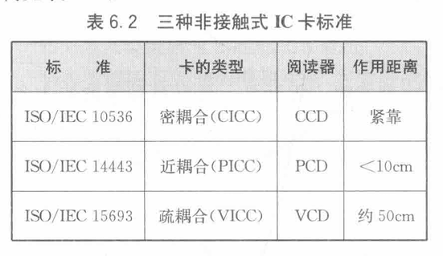
- ISO /IEC 11784 规定动物识别的代码结构
- ISO/IEC 11785 规定相关的技术准则(数据：差分曼彻斯特码)
- ISO/IEC 14223 为读取动物应答器内的特殊数字提供了协议，这些数字被存储在集中所有动物数据的中央数据库内
物品识别标准
ISO/IEC 18000 ：空中接口的重要标准
无线频段（频率）有6个即低于135 kHz，13.56 MHz，433 MHz，860~960 MHz，2.45 GHz和5.8 GHz。作用距离从数厘米至十多米不等
ISO/IEC 18001 ：给出了应答器的外形要求
ISO/IEC 10374 ：微波应答器的集装箱识别标准
- 工作频率范围为850~950 MHz以及2.4~2.5 GHz，应答器的灵敏度以最大电场强度150 mV/m定义，最大可阅读距离为13 m
ISO/IEC 14443 标准
ISO/IEC 14443的全称是近耦合集成电路卡
定义了近耦合卡（Proximity Integrated Circuit Card，PICC）的作用原理和工作参数。
- PICC是指作用距离大约为0～15cm的非接触IC卡，主要应用于售票领域
- PICC作为数据载体，通常包含有一个微处理器，另外还可能有附加的触点供使用。
ISO/IEC 14443-1物理特性
- 规定了近耦合卡的物理特性
- PICC（应答器）是一种ID-1型卡，通常在其卡面上有集成电路和耦合工具
- PCD（读写设备）是通过电感耦合为PICC提供能量，控制数据交换进程的读写设备
- PICC与集成电路之间的通信是通过与近耦合设备进行电感耦合完成的
ISO/IEC 14443-2频谱能量和信号接口
规定了耦合场的性质与特征，以及PCD和PICC之间的双向通信，该耦合场需要外界提供能量
PCD和PICC之间的初始化对话
- PCD的射频工作场激活PICC；
- PICC等待来自PCD的指令；
- PCD传输相关指令；
- PICC回送响应。
PCD和PICC之间的两种完全不同的数据传输方式（TYPE A和TYPE B）
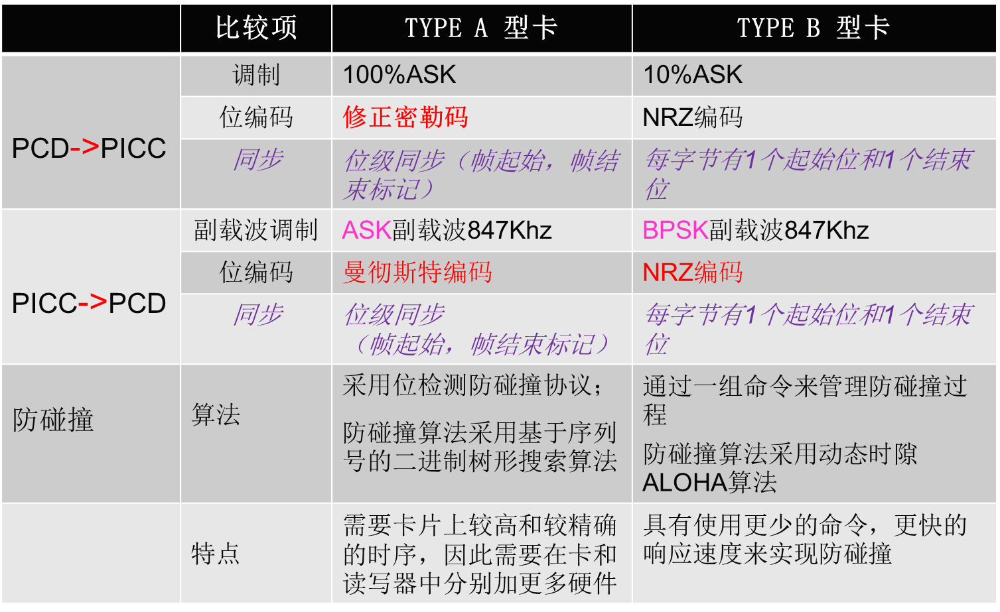
ISO/IEC 14443-4传输协议
头部(必备)，信息域(可选)，结尾(必备)
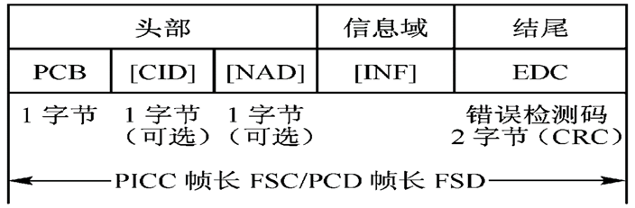
协议控制字节(PCB)包含控制数据传输所需的信息，定义了3种分组的基本类型
ISO/IEC 15693 标准
- ISO/IEC 15693的全称是疏耦合非接触集成电路卡，主要定义了疏耦合卡（VICC）的作用原理和工作参数。
- 读写器：VCD ，作用距离为0～1m的非接触IC卡，简单状态机的便宜的存储器组件作为数据载体
空中接口与初始化
- 能量：疏耦合设备（VCD）产生13.56Mz±7kHz=*的正弦波
VICC（应答器）通过电感耦合方式获得能量
VCD->VICC
ASK调制，调制深度为10%和100%
数据编码：采用PPM,编码方式有两种：“256选l”和“4选1”，由VCD选择、
VCD到VICC的帧
SOF和EOF，异同步，不依赖协议
SOF通知VICC模式选择，EOF可用于两种模式
VICC->VCD的通信
位表示和编码 ：采用曼彻斯特码编码方式
传输协议
- 唯一标识符（UID） ：由制造商永久地设定
- 应用族标识符（AFI） ：由VCD锁定的应用类型
- 数据存储格式标识符（DSFID） ：指出了数据在VICC内存中的结构
- CRC ：初始值为FFH
- VICC内存结构 ：可寻址块达256个，块大小可至256位，最大内存容量可达64 kb（8 kB）。
块安全状态 ：由VICC作为对VCD请求的响应参数返回
请求帧： 由SOF（帧开始）、标志、命令编码、强制和可选的参数、数据、CRC、EOF（帧结束）等域组成
- 应答帧：标志域为8位
VICC的四种状态
- 断电；就绪；静默；选择
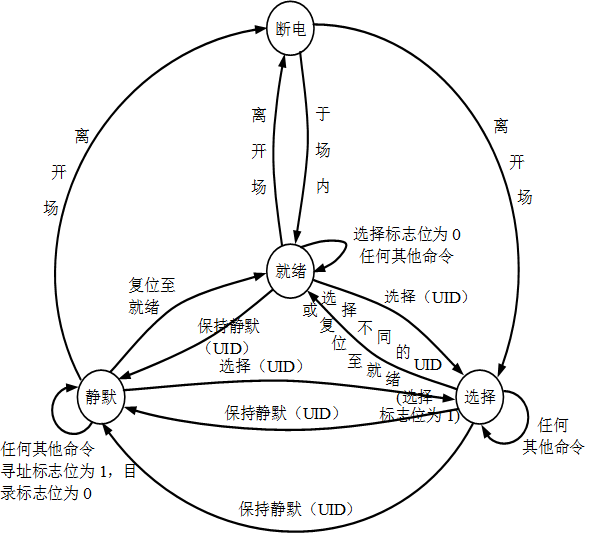
防碰撞过程中VICC的UID匹配方法
- 将得到的掩码放入比较器。
- 将时隙数放入比较器。
- 将上面两步得到的位值和VICC的UID相应低位值进行比较，如果相同即为匹配。
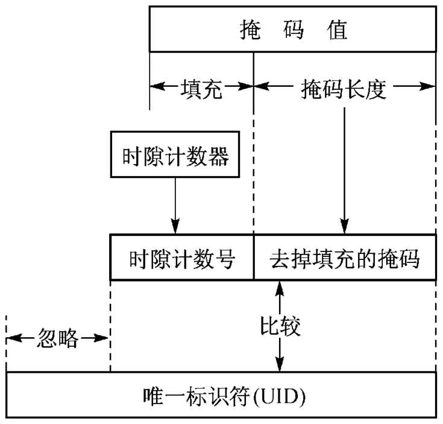
ISO/IEC 15693标准的防碰撞和传输协议
- 读写器通过设置槽数目标识来完成防碰撞功能
- 掩码的长度是指掩码值信号位的长度，防碰撞序列的目的是使用唯一标识符（UID）来确定工作场中的唯一的射频标签。
- 采用轮询机制和分时查询的方式达成防碰撞的目标，防碰撞算法采用时隙ALOHA算法。
[!tip]
- ISO 14443和ISO 15693对比
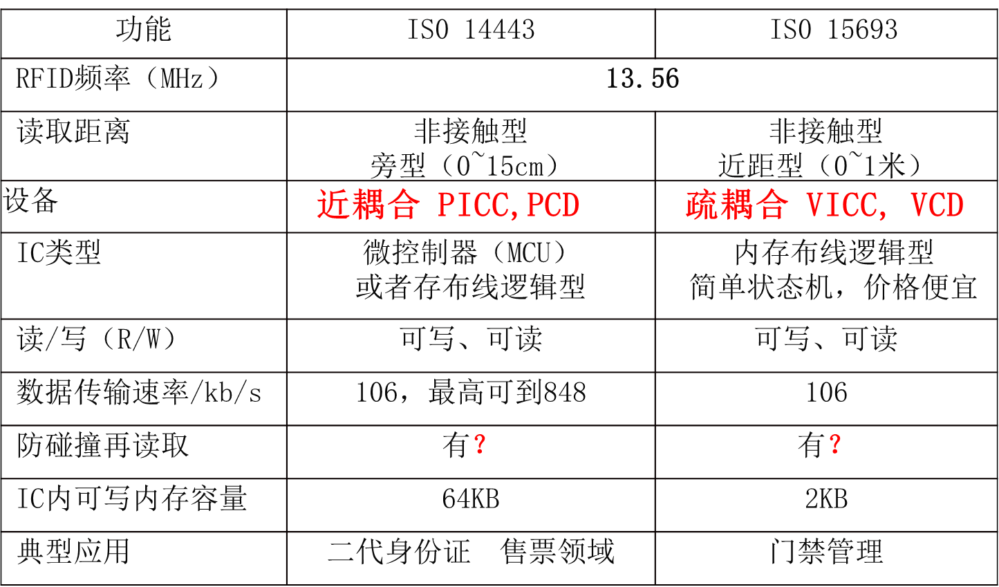
ISO/IEC 18000-6标准
- ÌISO/IEC 18000是目前相对较新的一系列标准，可用于商品的供应链
包含了有源和无源RFID技术标准，主要规定了基于物品管理的RFID空中接口参数，对数据内容和数据结构无限制，因而可用于EPC
物理接口：读写器需要同时支持Type A和Type B两种协议，而且能够在这两种类型之间进行切换，电子标签则需要支持至少一种类型。
TypeA协议是一种基于“读写器先发言”的通信机制，即基于读写器的命令与电子标签的回答交替发送的机制
Type B是基于“读写器”先发言的传输机制，是读写器的命令与电子标签的回答相互交换的机制
Type A协议物理接口
- 读写器到电子标签：
- 数据：载波振幅调制，调制深度是30％
- 数据编码：脉冲间隔编码（PIE ：Pulse Interval Encoding ） 即通过定义下降沿之间的不同宽度来表示不同的数据信号。
电子标签到读写器
- 电子标签通过反向散射给读写器传输信息
- 数据速率是40kb/s，数据采用FM0编码
TypeA的协议和命令
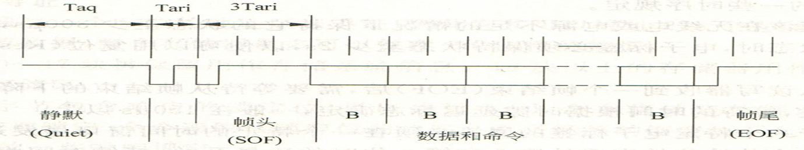
其中数据和命令格式
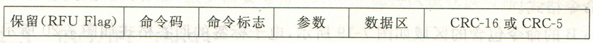
电子标签的回答
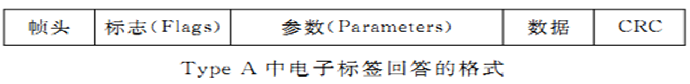
TypeB协议
- 读写器到电子标签
- 采用ASK调制，调制深度是11％或99％
- 位速率规定为l0kb/s或40kb/s
- 采用曼彻斯特编码
电子标签到读写器
- 采用FM0编码，通过调制入射并反向散射给读写器传输信息。
- 数据速率是40kb/s。
TypeB协议和命令：包括命令格式、数据和参数、存储器寻址和通信中的时序规定
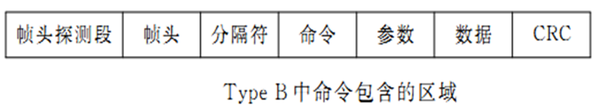
- Type B的标签回答格式
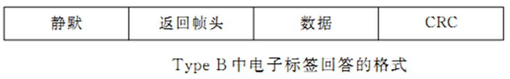
[!note]
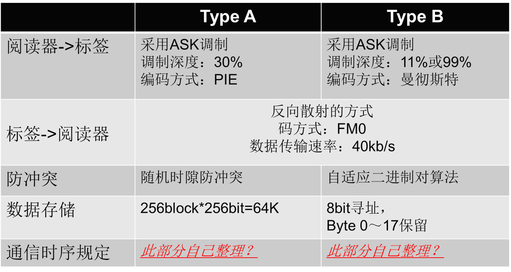
ISO/IEC 18000-7标准
- 窄带UHF频段
- 载波频率为433.92 MHz±20 ppm
- 采用FSK调制方式，频率偏移为±35 kHz
- 数据位采用曼彻斯特编码，数据速率为27.7 kbps
- 阅读器和应答器之间的通信采用主从方式